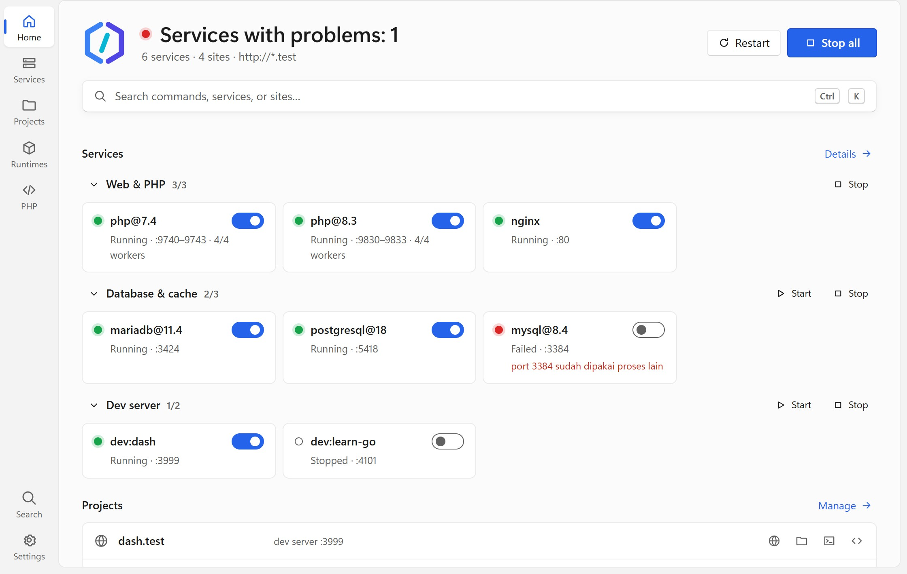
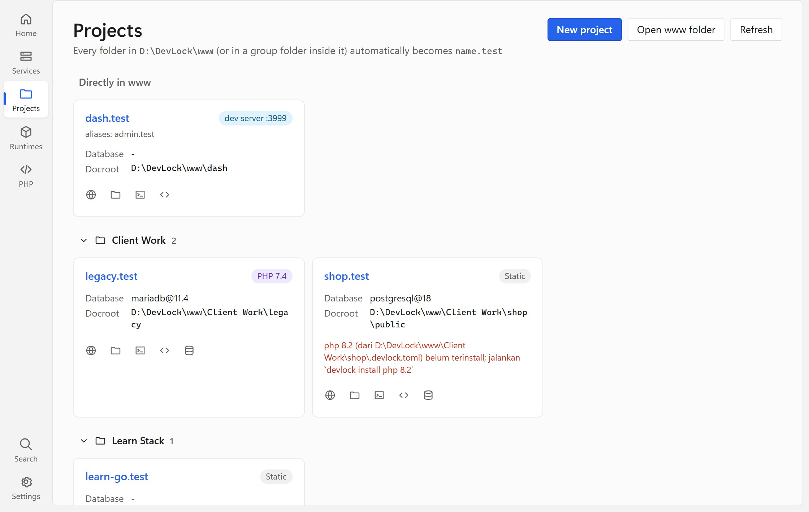
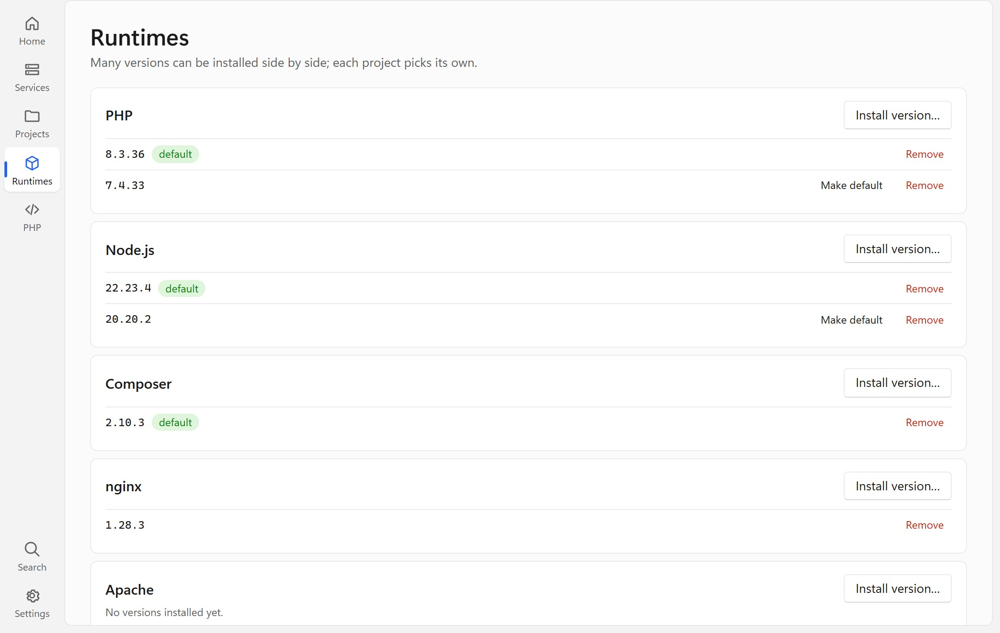

Many versions of PHP, Node, and databases, running side by side.
DevLock is a local development environment for Windows, an alternative to Laragon, XAMPP, and WAMP. Each project picks its own versions in one small file, and all of them run at the same time.
Windows 10/11 64-bit. Per-user installer without admin rights, or a portable zip.
Latest version , downloaded times
- blog.testphp 7.4 · mysql 5.7
- shop.testphp 8.4 · postgresql 18 · redis
- dash.testnode 22 · npm run dev
- legacy.testphp 8.3 · apache · mariadb 11.4

DevLock Home: services grouped into sections, each with its own Start/Stop.
Each project brings what it needs
Versions, services, domains, and certificates are set up from a .devlock.toml
file in the project folder.
Versions side by side
Each PHP version gets its own php-cgi pool. Each database and version is an instance with its own port and data folder.
php@7.4 :9740-9743 php@8.3 :9830-9833 mariadb@11.4 :3424 postgresql@18 :5418
.test domains and local HTTPS
Every folder in www becomes name.test, including folders inside a
group. The DevLock CA issues a certificate per site, and PHP and Node trust it too.
www\shop → shop.test www\Client Work\crm → crm.test
Per-folder shims
php, composer, node, npm, mysql,
and psql use the version of the folder you type them in.
cd www\blog; php -v # PHP 7.4 cd www\shop; php -v # PHP 8.4
Also included
- Databases and cache
- MySQL, MariaDB, PostgreSQL, and MongoDB, plus Redis or Garnet. Create, dump, and restore databases from the CLI or GUI.
- Node dev servers
dev = "npm run dev"runs as a service and the domain points to it. Vite gets a fixed port per site, so many Vite projects never fight over 5173.- Email and database panel
- Mailpit catches every email at
mail.test. Adminer atadminer.testalready knows your database instances. - Share publicly
devlock share blogexposes a site through a Cloudflare Quick Tunnel until you press Ctrl+C.- Tidy with dozens of projects
- Projects are grouped by folder, services are split into sections, and the Ctrl+K command palette reaches all of them.
- Moving from Laragon or XAMPP
devlock importbrings projects over fromwwworhtdocswithout copying files.
One small file per project
PHP, Node, database, cache, web server, and HTTPS settings live in the project folder, so they are committed and identical on every teammate's machine.
# www\shop\.devlock.toml php = "8.3" database = "mysql@8.4" cache = "redis@8" dev = "npm run dev" # Vite runs next to PHP https = true
Versions are also read from files you already use: composer.json,
.nvmrc, go.mod, .python-version, and
.java-version.


Runtimes from official sources, checksum-verified
Every runtime is downloaded straight from its publisher: php.net, nodejs.org, nginx.org, mariadb.org, mysql.com, postgresql.org, go.dev, Adoptium, MongoDB, and official GitHub releases.
| Category | Available |
|---|---|
| Languages | PHP, Node.js, Composer, Go, Python, Java (Temurin) |
| Web servers | nginx, Apache (per project, for .htaccess) |
| Databases | MySQL, MariaDB, PostgreSQL, MongoDB |
| Cache | Redis, Garnet |
| Tools | Adminer, Mailpit, cloudflared, Xdebug |
From zero to shop.test in the browser
Example for a Laravel project. Every step is also available in the GUI.
- Install DevLock
Run the installer from the Releases page, then open a new terminal.
devlock path add # put php/composer/node shims on PATH - Install the runtimes you need
Once only; every project shares the same installed versions.
devlock install php 8.3 devlock install composer devlock install nginx devlock install mysql 8.4
- Create a project
Laravel is installed with DevLock's own Composer.
devlock new laravel shop --php 8.3 --db mysql@8.4
- Start
nginx, PHP 8.3, and MySQL 8.4 come up; then open
http://shop.test.devlock start
Node projects, WordPress, HTTPS, and troubleshooting are in the guide.
Compared with other tools
| DevLock | Laragon | XAMPP | |
|---|---|---|---|
| Several PHP versions active at once | Yes | One active | One |
| Several database versions at once | Yes | One active | One |
| Version picked per project (file in the project) | Yes | No | No |
| Node dev server as a service | Yes | No | No |
Download DevLock for Windows
The installer and portable zip are published on GitHub Releases, each with a SHA-256 checksum. Download them from there only.
- Freeware, free for personal and commercial use.
- Portable: every runtime and all data live in the install folder.
- Local only: every service listens on 127.0.0.1.
- No telemetry in the app.